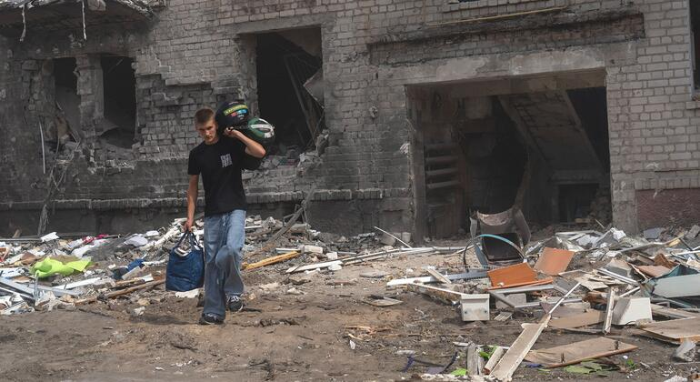
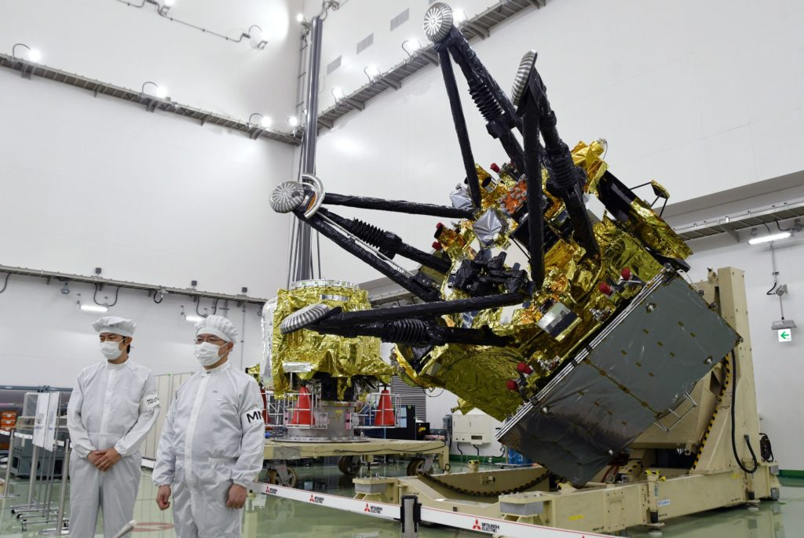
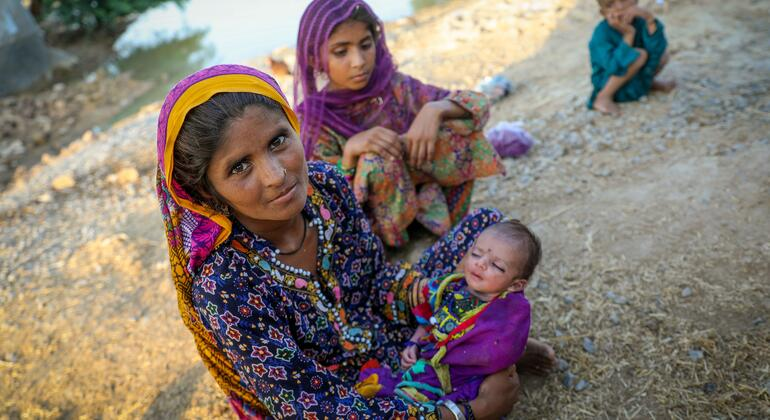

← Back to front pageWORLD REPORTWorld Report
14 digest(s) · newest first
Date saved: 2026-10-23 18:00 (PDT)
Sources: UN News, Reuters, Associated Press, Financial Times, ABC News, Al Jazeera
Key findings
UN Secretary-General warns of 'El Niño of war'
António Guterres told reporters in New York that conflicts are not only intensifying but expanding, likening the phenomenon to the El Niño climate pattern that disrupts weather thousands of kilometers away. 'Conflict is feeding conflict. And the consequences are travelling farther and faster,' he said. The Secretary-General pointed to the Middle East, Ukraine, and Sudan, where civilians and civilian infrastructure are deliberately coming under fire. He also expressed concern over escalation around Taiz in Yemen and continued Houthi attacks against civilian targets in Saudi Arabia. (Source)
Global economy slowing as geopolitical tensions rise
UNCTAD's report found that geopolitical tensions have increasingly replaced trade tensions as the main source of global instability. Global growth is projected to slow from 2.9% in 2025 to 2.6% in 2026 due to higher oil prices, transport disruptions, market volatility, and weaker investment demand. World merchandise trade growth is expected to fall from 4.7% in 2025 to between 1.5% and 2.5% in 2026. Developing economies face the greatest pressure including rising fuel, food, and fertilizer costs. (Source)
Global protest wave hits Europe and beyond
The Louvre and other top Paris museums shut down over fears of protest violence. Approximately 550,000 people took to the streets in France in demonstrations against rising fuel prices, the cost of living, and deteriorating public services. Protests have spread to Italy and other European countries. From economic pressures to anger over government policies, demonstrators are taking to the streets across Albania, Europe, North America, and South America. (Source) (Source)
COP31 climate summit faces trust test
Less than a month before COP31 opens in Antalya, Türkiye, representatives of three successive summit presidencies gathered to address a pressing question: how can the world restore trust in climate action when the consequences of a warming planet are already being felt? A summer heatwave has been linked to 50,000 deaths in Europe, the worst this century. (Source)
COP17 biodiversity targets falling short
Fewer than half of the national targets set to protect the world's plants, animals, and ecosystems are on track, the UN warns in a new report, days before countries gather in Yerevan, Armenia for the COP17 biodiversity conference. The world is waging a 'war on nature' as progress on biodiversity targets lags. (Source)
Gaza humanitarian funding at 12%
Humanitarian operations in Gaza are being squeezed by severe funding shortfalls. The 2026 Flash Appeal seeking more than $4 billion to support nearly 3 million people across Gaza and the West Bank is only 12% funded, with just $490 million received so far. The World Food Programme warned it may have to end food assistance for 500,000 people in Gaza due to critical funding shortfalls, forcing reduced rations. (Source) (Source)
South Sudan displacement crisis deepens
More than 304,000 people have been displaced in South Sudan's Jonglei state since conflict escalated in January, particularly in the counties of Uror, Nyirol, Ayod, Duk, and Akobo. The UN Security Council met on Sudan, described as the world's largest hunger and displacement crisis, with drone strikes killing civilians from El Obeid to Blue Nile and famine risk spreading across Darfur and Kordofan. (Source)
Afghanistan hunger at record levels
Acute malnutrition and hunger in Afghanistan have reached the highest levels ever recorded, with 15.9 million people facing acute food insecurity and conditions set to worsen in the coming months, according to a global hunger monitor report. (Source)
UN warns El Niño threatens 50 million people
The UN is urging urgent global action to prepare for an exceptionally intense El Niño, warning that extreme heat, droughts, and floods could worsen humanitarian crises across Latin America, Africa, Asia, and the Pacific. UN humanitarian chief Tom Fletcher warned that 50 million people could face increased hunger. The World Meteorological Organization outlined regional risks including potential flooding in East Africa, dry conditions in Southern Africa, and increased drought risks in Central America, the Southern Caribbean, and the Amazon. (Source)
Myanmar airstrike allegedly kills 50
The UN expressed alarm at reports that an airstrike by the Myanmar military near the country's border with Bangladesh had killed 50 people and wounded dozens more, many critically. (Source)
Morocco appoints first woman prime minister
King Mohammed VI appointed Fatima Ezzahra El Mansouri as Morocco's first woman prime minister after her liberal-centrist party came out on top in a September 23 parliamentary election. (Source)
US and Iran engaged in shuttle diplomacy
Qatari mediators are pressing a peace deal between the US and Iran, with Qatar saying it hopes shuttle diplomacy can lead to a breakthrough despite Trump's denial of reports that he was willing to ease sanctions and release frozen funds in exchange for Iranian concessions on its nuclear program. (Source)
 ▶Watch the video on YouTube
▶Watch the video on YouTube ▶Watch the video on YouTube
▶Watch the video on YouTubeThe world in October 2026 is experiencing what UN Secretary-General António Guterres called an 'El Niño of war' - conflicts that are not only intensifying but expanding and feeding each other across regions. The UN chief warned that conflicts in the Middle East, Ukraine, and Sudan are deliberately targeting civilian infrastructure, and the consequences are traveling farther and faster than ever before, disrupting energy markets, shipping, supply chains, and financial systems.
The global economy is entering a more fragile period, according to a UNCTAD report. Geopolitical tensions have increasingly replaced trade tensions as the main source of global instability since energy markets, financial conditions, and major shipping routes are disrupted by conflict in the Middle East. UNCTAD projects global growth will slow from 2.9% in 2025 to 2.6% in 2026. World merchandise trade growth is expected to fall sharply from 4.7% to between 1.5% and 2.5%.
At the same time, a global protest wave is unfolding. Massive anti-government demonstrations have erupted across France, Italy, and elsewhere, driven by rising costs of living, deteriorating public services, and housing shortages. The Louvre and other top Paris museums shut down over fears of protest violence. In Albania, Europe, North America, and South America, demonstrators are taking to the streets.
Climate and biodiversity summits are approaching with questions about whether the world can restore trust in climate action when the consequences of a warming planet are already being felt. COP31 opens in Antalya, Türkiye in November. COP17 on biodiversity is taking place in Yerevan, Armenia, where fewer than half of national targets to protect plants, animals, and ecosystems are on track.
The humanitarian picture is dire. Gaza faces a severe funding shortfall - the 2026 Flash Appeal seeking more than $4 billion is only 12% funded. In South Sudan, more than 304,000 people have been displaced since conflict escalated in January. Acute malnutrition and hunger in Afghanistan have reached the highest levels ever recorded, with 15.9 million people facing acute food insecurity. The UN warned that 50 million people could face increased hunger from an exceptionally intense El Niño. (Source)
Source links

Date saved: 2026-10-23 03:00 (PDT)
Sources: UN News, ABC News, Associated Press, CNN, UNCTAD, UNDP, WFP
Key findings
The UN Secretary-General's "El Niño of war" warning
- UN News (Oct 22, 2026): Secretary-General António Guterres stated that "we are now witnessing an El Niño of war", conflict is feeding conflict, and the consequences are travelling farther and faster; he pointed to the Middle East, Ukraine, and Sudan where civilians and civilian infrastructure are deliberately coming under fire; the international community must combat inequality and stop wars from expanding; Guterres noted that "some can absorb higher prices, while others must choose between food and heat"; the UN World Food Programme urgently requires $450 million for its operations in Gaza and the West Bank for the next six months. (Source)
Global protests and economic pressure
- UN News (Oct 22, 2026): People have taken to the streets across Europe to express frustration over the rising cost of living; Guterres clearly denounced the violence and destruction seen during days of protests in France, Italy, and elsewhere but said legitimate grievances of the protestors cannot be overlooked; "everywhere, pressures are building over the price of food, fuel and other basics," and "interest rates are up, for people and countries." (Source)
- ABC News (Oct 22, 2026): France is experiencing another wave of intense civil unrest with violent protests erupting across major cities; more than 1,800 people have been arrested and multiple public buildings including historic town halls have been set ablaze; protests over rising living costs, poor school conditions, and broader political grievances have drawn hundreds of thousands nationwide; Macron announced France would ban "illegitimate" protests; protests also rocked the Serbian capital of Belgrade. (Source)
Climate disasters and underfunding
- ABC News / Associated Press (Oct 22, 2026): The UN climate fund promised just $20 million for Nepal flood recovery; the devastating floods killed thousands and destroyed buildings, schools, roads, and dams resulting in billions of dollars of damages; Taiwan shut schools and grounded flights as Typhoon Champi brushed by; a 7-magnitude earthquake hit Tibet, killing 16 and injuring dozens, according to Chinese state media. (Source)
- UNCTAD (May 2026): The global economy remained resilient at the start of 2026 but geopolitical tensions have increasingly replaced trade tensions as the main source of global instability; UNCTAD projects global growth will slow from 2.9% in 2025 to 2.6% in 2026 due to higher oil prices, transport disruptions, market volatility, and weaker investment demand; the 2026 Flash Appeal seeking more than $4 billion to support nearly 3 million people across Gaza and the West Bank is only 12% funded, with just $490 million received so far. (Source)
Other global stories
- ABC News (Oct 22, 2026): South Korea proposed military talks with North Korea to calm rising border tensions; the U.S. and Israel reportedly drew up plans to renew Iran strikes; Ukraine and Russia exchanged major strikes on capital cities after peace talks; a 7.0 earthquake struck China's Tibet; a foreign citizen was killed during a march in South Africa as anti-immigrant tensions flared; France reported its first known human case of the Shamonda virus. (Source)
- UNDP (Oct 2026): Approximately 800 million young people entering the labour market in developing economies over the coming years will not find jobs unless countries act, the head of the UN Development Programme warned, as the agency launched two initiatives to boost investment and employment. (Source)
 ▶Watch the video on YouTube
▶Watch the video on YouTube ▶Watch the video on YouTube
▶Watch the video on YouTubeThe UN Secretary-General's October 22, 2026, statement framing the global situation as an "El Niño of war" (conflicts intensifying and expanding in a way that, like the climate phenomenon, disrupts everything far from the epicenter), is the most concise distillation of the current world picture available from any single official source. António Guterres stated that "conflict is feeding conflict, and the consequences are travelling farther and faster," pointing to the Middle East, Ukraine, and Sudan, where civilians and civilian infrastructure are deliberately coming under fire. The consequences do not stop in the battle zones, war disrupts energy markets, shipping, supply chains, and financial systems, and these shocks hit a world that was already profoundly unequal, where "some can absorb higher prices, while others must choose between food and heat."
The protests erupting across Europe (in France, Italy, Serbia, Albania, India) are, in Guterres's framing, not separate from the war economy but a direct expression of the same pressures: rising cost of living, interest rates up for people and countries, and a younger generation for whom "the promise of a better future is slipping further out of reach." The throughline connecting the protests to the wars is the economic architecture that, in Guterres's words, forces "those with the least to absorb the greatest shocks." What to watch next is whether the UN Security Council-backed Comprehensive Plan to End the Gaza Conflict gains any traction, whether the World Food Programme's $450 million appeal for Gaza and the West Bank for the next six months is funded, and whether the fiscal pressures that are driving the European protests produce political change or just more cycles of violence.
Source links

Date saved: 2026-10-22 18:00 (PDT)
Sources: UN News, NPR, CNN, BBC, Sky News, UN Climate Summit, Council on Foreign Relations
Key findings
France riots and the European protest wave
- Nationwide protests in France over the cost of living and underfunded schools turned into the country's worst rioting in years over the weekend of October 17-18, 2026; more than half a million people took to the streets, shops were looted, buildings were set on fire, and the historic city hall in Limoges, built in 1883, was gutted by fire; more than 2,000 people were arrested and the country's far-right moved to seize the moment. (Source)
- French Prime Minister Sébastien Lecornu announced curfews in parts of Paris (23:00-06:00), central Lyon (21:00-06:00), Lille, Marseille (for unaccompanied minors), and Nice; the curfews are to remain "for as long as necessary" and the government is prepared to declare a state of emergency if necessary. (Source)
- Approximately 800 million young people entering the labour market in developing economies over the coming years will not find jobs unless countries act, the head of the UN Development Programme warned on October 21, as the agency launched two initiatives to boost investment and employment. (Source)
India voter roll crisis and other political shocks
- India was plunged into political crisis after 130 million names were struck off voter rolls during a massive revision, according to NPR, in a move that has raised serious questions about democratic access ahead of elections. (Source)
- AIPAC, the influential pro-Israel lobbying group and political funder, announced it would no longer endorse candidates or give directly to campaigns, according to NPR. (Source)
- A South African man was beaten to death by a group of around 50 people during an anti-immigrant protest march in Durban; police said anti-immigrant tensions continue to flare in Africa's most advanced economy. (Source)
- A strong magnitude 7 earthquake struck China's Tibet at 10:30 p.m. local time on October 22, according to the USGS. (Source)
Climate, biodiversity, and the UN agenda
- Less than a month before the UN climate conference COP31 opens in Antalya, Türkiye, representatives of three successive summit presidencies gathered to address how the world can restore trust in climate action when the consequences of a warming planet are already being felt; the UN Climate Summit on September 23, convened by Secretary-General Guterres, highlighted the need to scale up clean energy, expand access to affordable climate finance, and strengthen communities' resilience. (Source)
- Fewer than half of the national targets set to protect the world's plants, animals, and ecosystems are on track, the UN warned in a new report days before countries gather in Yerevan, Armenia, for the COP17 biodiversity conference; Guterres appealed for governments, businesses, and communities to accelerate efforts to protect biodiversity. (Source)
- A UN report warned that rapid transformations (from artificial intelligence and digital technologies to renewable energy and demographic shifts) are reshaping economies worldwide, creating new opportunities but also threatening to deepen socio-economic inequalities; acute malnutrition and hunger in Afghanistan have reached the highest levels ever recorded, with 15.9 million people facing acute food insecurity. (Source)
- Approximately two-thirds of England fell into drought, with water restrictions affecting 27 million people, as climate change fuels hotter summers and some Britons move north in search of cooler weather. (Source)
 ▶Watch the video on YouTube
▶Watch the video on YouTube ▶Watch the video on YouTube
▶Watch the video on YouTubeThe world in late October 2026 is coming apart at the seams in ways that are starting to connect. UN Secretary-General António Guterres, speaking to reporters in New York ahead of a visit to Egypt, warned that "we are now witnessing an El Niño of war" (conflicts are not only intensifying but expanding, and the consequences are traveling farther and faster than the battle zones where they originate. The cost-of-living protests that began over school conditions and fuel prices in France spiraled into the country's worst rioting in years, with historic city halls gutted by fire, more than 2,000 people arrested, and curfews imposed across Paris, Lyon, Lille, Marseille, and Nice. Guterres's message was that the legitimate grievances behind those protests), inequality, rising prices, the choice between food and heat, are deeply linked to the wider turmoil in a world where conflicts in the Middle East, Ukraine, and Sudan are disrupting energy markets, shipping, supply chains, and financial systems all at once.
The same week, India plunged into a political crisis after 130 million names were struck off voter rolls during a massive revision, a South African man was beaten to death by a group of around 50 people during an anti-immigrant protest in Durban, and a magnitude 7 earthquake struck China's Tibet. The COP31 climate summit in Antalya, Türkiye, less than a month away, faces a test of trust as the consequences of a warming planet are already being felt; a UN report warned that fewer than half of national targets set to protect biodiversity are on track ahead of the COP17 biodiversity conference in Yerevan, Armenia; and a separate UN report warned that rapid transformations (AI, green energy, and economic transitions) risk leaving vulnerable communities behind. The throughline is that the shocks are hitting a world that was already profoundly unequal, and the institutions designed to manage them are being tested simultaneously.
Source links

Date saved: 2026-10-22 03:00 (PDT)
Sources: UN News, NPR, Washington Post, AFP, Associated Press, Al Jazeera, France24, WHO, IMF, UNEP
Key findings
Yemen, Sudan, DRC Ebola: the under-covered humanitarian emergencies
- UN News (Oct 16, 2026): To Yemen, where Taiz city is now completely "isolated" and its hospitals have just four days' fuel supplies left, as fighting reaches urban areas. The UN International Organization for Migration (IOM) reported that more than 233,000 people have now been displaced since the Yemen conflict began. A Houthi strike on Riyadh's King Khalid International Airport on October 10 killed at least 12 people, including an American, and wounded 309, Saudi officials said. It followed a Houthi-claimed strike two days earlier that killed three Saudis. The UN Secretary-General Guterres expressed deep shock and strong condemnation at these fatal attacks. (Source)
- UN News (Oct 16, 2026): Security Council meets on Sudan, the world's largest hunger and displacement crisis. As drone strikes kill civilians from El Obeid to Blue Nile and famine risk spreads across Darfur and Kordofan, ambassadors are expected to press yet again for a ceasefire, safe aid access, and an end to the weapons flows fuelling the brutal conflict. (Source)
- UN News / WHO (Oct 2026): The World Health Organization (WHO) is strengthening Ebola preparedness amid conflict and displacement affecting millions of lives across parts of Africa, Asia, and Europe. The Ebola outbreak in eastern Congo is taking a psychological toll on families dealing with loss, fear, and stigma. Africa CDC has called an Ebola crisis summit as Nigeria records its first case. As of 29 September, at least 2,076 children had been confirmed with Ebola and at least 1,162 had died. UNICEF needs just over $113 million for its Ebola response in DRC and has received just over a third to date. More than 1,900 children have lost one or both parents or caregivers to the Ebola outbreak in DRC, or have been separated from these loved ones. (Source)
- Washington Post / AFP (Oct 2026): Africa CDC calls an Ebola crisis summit as Nigeria records its first case, health ministers invited to an "extraordinary virtual meeting" as Ebola spreads across the continent. (Source)
France protests, Macron's final months, global unrest
- NPR (Oct 19, 2026): For weeks, people in France have been protesting over the cost of living and school conditions. But this weekend, many protests turned violent, and now French officials have implemented a curfew to quell the violence. France's president is condemning the violent protests erupting across the country. (Source)
- Washington Post / AFP (Oct 2026): As riots overshadow Macron's final months in office, presidential hopefuls jockey to succeed him. Emmanuel Macron, a centrist, is in the final stretch of his presidency as France faces intense protests. Macron slams as "stupid" claims by Trump and others blaming Muslim migrants for French riots, criticizing foreign leaders including US President Donald Trump for exploiting unrest in France for political gain. (Source)
- Washington Post / AFP (Oct 2026): Students march into Belgrade while populist Vucic holds rally in Serbia's south ahead of vote, thousands of people have greeted marching students arriving into Serbia's capital on the eve of a closing campaign rally ahead of a tense parliamentary election on the weekend challenging authoritarian leader Aleksandar Vucic. (Source)
- Washington Post / AFP (Oct 2026): Trump-allied Colombian president removes art exhibits he deems communist, sparking protests. Colombian President Abelardo de la Espriella says he is leading a cultural shift by removing exhibits from the National Museum. (Source)
- Washington Post / AFP (Oct 2026): Bukele says military operation launched to rescue Salvadorans held by gangs in Haiti, El Salvador's President Nayib Bukele says he has launched a military operation to rescue four Salvadoran aviation technicians kidnapped by gangs in Haiti. (Source)
Climate, biodiversity, space, and global economy
- UN News (Oct 16, 2026): Less than a month before the UN climate conference COP31 opens in Antalya, Türkiye, representatives of three successive summit presidencies gathered to address a pressing question: How can the world restore trust in climate action when the consequences of a warming planet are already being felt? The devastation in Nepal offered a stark reminder of what is at stake. This year's strengthening El Niño could be among the strongest since at least 1950, while the world is on its way to hotting up by 2.8°C above pre-industrial levels under current climate policies, far beyond the Paris Agreement's goals. (Source)
- UN News (Oct 16, 2026): Guterres urges faster action and financing to stop biodiversity loss. The UN Secretary-General issued an appeal on Friday for governments, business, and communities to accelerate efforts to protect biodiversity for future generations and all life on Earth. Fewer than half of the national targets set to protect the world's plants, animals, and ecosystems are on track, the UN warns in a new report, days before countries gather in Yerevan, Armenia, for the COP17 biodiversity conference. Rapid transformations (from artificial intelligence and digital technologies to renewable energy and demographic shifts) are reshaping economies worldwide, creating new opportunities but also threatening to deepen socio-economic inequalities, a new UN report warned on Thursday. (Source)
- UN News (Oct 4, 2026): Beyond the Moon: Space Week around the world. Right after the Soviet Union launched Sputnik in 1957, UNOOSA, the UN Office for Outer Space Affairs, was established and has since been monitoring developments across more than 77 successful lunar missions and other journeys while also taking a lead role in the annual World Space Week, which runs from October 4 to 10. (Source)
- UN News / UNEP (Oct 3, 2026): Rotting food waste emits 5 times more greenhouse gases than planes, rotting food waste is causing up to 10% of total global greenhouse gas emissions, five times more than the entire aviation sector, the UN's environment agency warned this week. (Source)
- IMF / UN (Oct 2026): The IMF has upgraded its global growth forecast to 3.1%. Global multi-dimensional poverty has risen for the first time since 2010, according to a UN report. (Source)
ICC-Taliban, ICC, housing crisis, and other international stories
- UN News (Oct 5, 2026): The International Criminal Court (ICC) has made public four arrest warrants against senior Taliban figures, accusing them of persecuting women and girls in Afghanistan, which amounts to a crime against humanity. (Source)
- UN News (Oct 2026): Representatives from governments, civil society, and academia meeting in Muscat, Oman on Monday called for urgent action to address a global housing crisis affecting nearly 3.4 billion people. (Source)
- Washington Post / AFP (Oct 2026): Brazil's Supreme Court suspends permit for major Amazon gold mine. Over 500 people in South Africa have fallen ill from a gastrointestinal illness linked to poor water quality in two cities. In Honduras, hard hit by drought, authorities hope to make it rain using contentious tactic (global warming is making the El Niño weather pattern stronger, and it's prolonging a devastating drought across a region of Central America known as the Dry Corridor. Pakistan has arrested a man accused of running an online counterfeit postage operation that US prosecutors say caused more than $126 million in losses to the US Postal Service. North Korea says it will resume propaganda broadcasts across border into South Korea) Kim Jong Un's sister says the country will resume broadcasting propaganda across the heavily armed border with South Korea this month. (Source)
 ▶Watch the video on YouTube
▶Watch the video on YouTube ▶Watch the video on YouTube
▶Watch the video on YouTubeThe world beyond the great-power and Middle East conflicts in October 2026 is a planet under simultaneous stress from multiple directions that rarely get equal billing: a war in Yemen that has now killed at least 17 people in a single Houthi strike on Riyadh's airport and displaced 233,000 people inside Yemen; a Sudan war where drones and hunger are taking a deadly toll and famine risk is spreading across Darfur and Kordofan; an Ebola outbreak in eastern Congo that has now reached Nigeria's first case and prompted an Africa CDC extraordinary crisis summit; a France gripped by violent protests over cost of living and school conditions that have forced a curfew and pushed President Macron into open confrontation with both protesters and foreign leaders who he accuses of exploiting the unrest for political gain; and a COP31 climate summit opening in Antalya, Türkiye, less than a month away, where the question on the table is how to restore trust in climate action when the world is on track to warm by 2.8°C above pre-industrial levels under current policies.
The throughline is that the institutional machinery for handling these crises (UN Security Council, WHO, Africa CDC, WFP, IOM) is running on fumes. The WFP has cut Gaza assistance by roughly one-third as funding shortages threaten fragile food-security gains. The WHO is scaling up Ebola readiness in 22 countries across three continents but has received just over a third of the $113 million it needs for its DRC response. Fewer than half of national biodiversity targets are on track, and the COP17 biodiversity conference in Yerevan, Armenia, opens next week with the UN warning that over 1 million species face extinction risk but protection Action is "extremely slow" and funding "severely inadequate." The IMF has upgraded its global growth forecast to 3.1%, but a new UN report warns that AI and digital technologies are threatening to deepen socio-economic inequalities.
What to watch next: whether the COP31 Antalya summit produces any credible mechanism for restoring trust or just another round of pledges that don't match the 2.8°C trajectory; whether the France protests escalate or get contained by the curfew; whether the Ebola outbreak in DRC continues to spread across borders; and whether the ICC arrest warrants against four senior Taliban figures for persecuting women and girls (a crime against humanity) produce any actual enforcement.
Source links
- UN News: UN News Today 16 October 2026 (Yemen, Gaza, biodiversity, Sudan, Ebola)
- UN News: As disasters mount, next UN climate summit faces a test of trust (COP31 Antalya)
- NPR: World News and International Headlines (France protests, curfew)
- Washington Post: Latest World Wires (France riots, Serbia election, Colombia, Haiti, Brazil Amazon, Ebola, North Korea)
- UN News: ICC unseals four arrest warrants over Taliban persecution of women and girls
- UN News: UN News Today 06 October 2026 (Ebola DRC, US-Iran war, Guterres Pakistan visit)
- Al Jazeera: Ukraine pushes Russian forces back as US support wavers (Oct 16, 2026)
- Restricted Handling: RH 10.20.26: Last 24-48 hrs (global geopolitical roundup)
- Mackinder Forum: Weekly Geopolitical News Bulletin: October 10-16, 2026
- Modern Diplomacy: MD Weekly Briefing, Week of 12 October 2026
- BBC News: Targeted curfews help quell violence and rioting across French cities (Oct 20, 2026)
- Inside Story: Has the world ignored the plight of Sudan's war victims? (Oct 21, 2026)
Date saved: 2026-10-21 18:00 (PDT)
Sources: UN News, NPR, PBS NewsHour, France24, SCMP, AP, UNICEF, UN Human Rights Monitoring Mission, Amnesty International UK, COP31, COP17
Key findings
France imposes curfews after most destructive rioting in years
Fresh curfews were being imposed across the city centers of Paris and Lyon after the first quiet night since France's most destructive rioting in years. More than 1,800 people were arrested across France after violent groups clashed with officers and looted shops during nationwide demonstrations that drew hundreds of thousands of people. The unrest last weekend shocked the country because of both its scale and the apparent inability of police to contain it. France's president condemned the violent protests erupting across the country. For weeks, people in France have been protesting over the cost of living and school conditions, but this weekend many protests turned violent. (Source)
COP31 climate summit faces test of trust
Less than a month before the UN climate conference COP31 opens in Antalya, Türkiye, representatives of three successive summit presidencies gathered to address a pressing question: how can the world restore trust in climate action when the consequences of a warming planet are already being felt? As disasters mount, the next UN climate summit faces a test of trust. The UN Secretary-General convened a Climate Action Summit on September 23, 2026, amid growing climate impacts and uncertainty around the global economy and energy security. Leaders discussed how to turn existing climate commitments into faster, stronger action. (Source)
Sudan: world's largest hunger and displacement crisis
As drone strikes kill civilians from El Obeid to Blue Nile and famine risk spreads across Darfur and Kordofan, the Security Council meets on Sudan, the world's largest hunger and displacement crisis. Ambassadors are expected to press yet again for a ceasefire, safe aid access, and an end to the weapons flows fueling the brutal conflict. The UN human rights monitors reported that civilian casualty rates in Ukraine remain at "deadliest" levels in years, but Sudan represents a humanitarian catastrophe of comparable scale that receives a fraction of the attention. (Source)
Afghanistan: 19.2 million face acute food insecurity
The United Nations is warning that 19.2 million Afghans could soon face acute food insecurity, with over four million babies and children under six needing treatment for acute malnutrition next year. The food crisis in Afghanistan is one of the most severe in the world, driven by economic collapse, drought, and the withdrawal of international development assistance. (Source)
Biodiversity: fewer than half of national targets on track
Fewer than half of the national targets set to protect the world's plants, animals, and ecosystems are on track, the UN warns in a new report, days before countries gather in Yerevan, Armenia, for the COP17 biodiversity conference. The UN Secretary-General appealed for governments, businesses, and communities to accelerate efforts to protect biodiversity for future generations and all life on Earth. The biodiversity conference represents a parallel track of global environmental diplomacy that has received far less attention than climate. (Source)
UN warns AI and green energy transitions risk leaving vulnerable communities behind
Rapid transformations (from artificial intelligence and digital technologies to renewable energy and demographic shifts) are reshaping economies worldwide, creating new opportunities but also threatening to deepen socio-economic inequalities, a new UN report warned on October 15, 2026. The report highlights the risk that the benefits of technological and energy transitions will concentrate among wealthy nations and populations while vulnerable communities are left further behind. (Source)
El Niño strengthening in a hotter world
El Niño is strengthening in a world that is already hotter, raising the risk of drought, floods, and crop losses across some of the world's most important food-producing regions. But unlike many disasters, this one can be seen coming. UN experts say the months ahead offer countries a chance not only to protect the next harvest and food security, but to prepare for a more unpredictable climate in the long run. The El Niño phenomenon compounds the climate pressures already being felt globally. (Source)
Europe-wide protests: soaring rents, dilapidated schools, inflation
From Paris to Tirana, protests and riots are sweeping across Europe. Soaring rents, dilapidated schools, and inflation are igniting widespread clashes, fuelling political turmoil across the continent. The protests reflect a continent-wide crisis of affordability and public services that is feeding into political instability in multiple countries. The French unrest is the most dramatic manifestation of a broader pattern. (Source)
Global economy: blocked shipping routes and supply chains slowing growth
The geopolitical situation in the Middle East remains fragile and tense, and the regional wars in Ukraine and the Middle East have already shown great propensity to disrupt global trade and investment flows, including through sanctions, threats to shipping, and volatility in global energy markets. Blocked shipping routes and supply chains are increasing the cost of living and slowing growth, with the global economy facing what Reuters called "considerable economic headwinds" alongside the most fluid conflict environment in decades. (Source)
UN General Assembly: 130 heads of state amid wars and AI fears
World leaders gathered at the United Nations in September 2026 against a backdrop of wars in the Middle East and Ukraine, rising fears over artificial intelligence, and mounting economic and climate pressures. The annual General Assembly tested whether the 193-member body can still bring countries together to tackle crises that increasingly transcend borders. The UN's 193 member nations agreed to a wide-ranging reform package that includes updating key institutions such as the UN Security Council. The future of the United Nations was definitely on the agenda. (Source)
UNICEF: 340+ children killed in Gaza more than one year after ceasefire
A little over one year since a ceasefire agreement was announced between Hamas fighters and Israel, more than 340 children have been reported killed and hundreds more injured in Gaza, UNICEF said on October 16, 2026. The figures underscore the ongoing human toll of the conflict even after the formal cessation of hostilities, and the slow pace of recovery and reconstruction in the territory. (Source)
 ▶Watch the video on YouTube
▶Watch the video on YouTube ▶Watch the video on YouTube
▶Watch the video on YouTubeThe world in October 2026 is a planet of overlapping emergencies that no single news frame can contain. The UN General Assembly in September gathered 130 heads of state against a backdrop of wars in Iran, Gaza, Ukraine, Sudan, Congo, and Myanmar, and a persisting question about whether the multilateral system can do anything to end them. Less than a month before COP31 opens in Antalya, Türkiye, representatives of three successive summit presidencies gathered to address a pressing question: how can the world restore trust in climate action when the consequences of a warming planet are already being felt? The answer, so far, is that it cannot.
Alongside the major wars covered elsewhere in this digest, a quieter catastrophe is unfolding. Sudan is the world's largest hunger and displacement crisis. As drone strikes kill civilians from El Obeid to Blue Nile and famine risk spreads across Darfur and Kordofan, the UN Security Council meets on Sudan, ambassadors are expected to press yet again for a ceasefire, safe aid access, and an end to the weapons flows fueling the brutal conflict. Afghanistan faces an acute food insecurity crisis threatening 19.2 million people, with over four million babies and children under six needing treatment for acute malnutrition next year. Congo and Myanmar remain in active conflict with no resolution in sight.
The protests sweeping Europe reveal a continent under economic and political strain. France imposed fresh curfews across Paris and Lyon after the most destructive rioting in years, more than 1,800 people arrested nationwide after violent groups clashed with officers and looted shops during demonstrations that drew hundreds of thousands. The unrest shocked the country because of both its scale and the apparent inability of police to contain it. France's president condemned the violence. Similar protests and riots are sweeping across Europe, driven by soaring rents, dilapidated schools, and inflation.
The global economy faces a convergence of pressures: blocked shipping routes and supply chains increasing the cost of living and slowing growth, record greenhouse gas concentrations, and the El Niño phenomenon strengthening in a world already hotter, raising the risk of drought, floods, and crop losses across some of the world's most important food-producing regions. China's hybrid car exports to the EU surged by more than 200% as an import cap looms, climbing to nearly 100,000 vehicles in September ahead of limits due to take effect at the end of the year. More than $15 billion has been raised in the U.S. midterm elections.
What to watch: COP31 in Antalya, COP17 in Yerevan (biodiversity), and the biodiversity conference's warning that fewer than half of national targets to protect plants, animals, and ecosystems are on track. The UN Secretary-General convened a Climate Action Summit on September 23, 2026, amid growing climate impacts and uncertainty around the global economy and energy security. The coming months will test whether the multilateral system can produce anything beyond rhetoric.
Source links
Date saved: 2026-10-21 03:00 (PDT)
Sources: NPR, Washington Post, Anadolu Agency, Al Jazeera, AP, BBC, France24, The Hindu, UN, Alberta NDP
Key findings
France: cost-of-living protests turn violent
- Fresh curfews were being imposed across the city centers of Paris and Lyon on October 20 after the first quiet night since France's most destructive rioting in years; French authorities expanded overnight curfews beyond Paris to Nice, Lyon, and parts of the Gironde department. (Source)
- French police used tear gas and a water cannon against protesters in central Paris on October 19, a day after nationwide cost-of-living demonstrations were marred by violence that resulted in more than 2,000 arrests; Interior Minister Laurent Nunez said approximately 1,800 people were arrested during and after the nationwide demonstrations involving Yellow Vest groups. (Source)
- The unrest began as a student protest for better conditions and expanded to include public-sector workers protesting high energy prices, the rising cost of living, and social inequality; the Interior Ministry reported about 2,300 arrests and nearly 1,000 injured police officers. (Source)
- French President Emmanuel Macron denounced the violence and accused student protesters of harboring political motivations and being exploited by his enemies; far-left candidate Jean-Luc Mélenchon has joined the protesters, while far-right leader Marine Le Pen (who is leading in the polls) has condemned the violence and the government. (Source)
- Belgian police arrested 195 people during protests against education policies and budget cuts in Brussels and Liege; Italian police arrested 28 people, including 12 minors, following clashes during cost-of-living protests in several cities. (Source)
Ebola outbreak spreads
- Nigeria confirmed an Ebola case in Abuja as a woman arriving from Uganda tested positive on October 20; Nigeria is the latest country to report an Ebola case as the outbreak spreads across the region; Kenya confirmed its first case earlier this month and has since recorded nine infections. (Source)
- The U.S. Embassy in the United Arab Emirates issued a security alert warning Americans in the Middle East to exercise heightened vigilance amid a complex security environment, citing potential flight cancellations, airspace closures, and travel disruptions related to Houthi attacks. (Source)
World Food Program cuts Gaza assistance
- The UN World Food Program announced that funding shortages have forced it to cut food assistance in the Gaza Strip by around one-third, leaving half a million people without critical support as winter approaches. (Source)
Other international stories
- Alberta voters overwhelmingly rejected a separation process in a victory for Canadian Prime Minister Mark Carney amid a trade war with the U.S. and tensions with President Trump. (Source)
- A drone strike on a market in the disputed African region of Abyei killed at least 153 people on October 21. (Source)
- The UN projections say the world is losing ground in the fight to curb climate change, faulting the U.S. a bit; the U.S. is the only major economy where planet-warming pollution dramatically increased last year. (Source)
- The UK government approved a natural gas project off Scotland's coast despite environmental objections. (Source)
- Four international troops (Salvadorans, members of the U.N.-backed Gang Suppression Force) are missing in Haiti after a gang ambush in Croix-des-Bouquets. (Source)
- Rubio visited India seeking relief from the global energy crunch. (Source)
- UK police rearrested two men in a suspected Iranian plot on an air base; the suspects were arrested "on suspicion of assisting a foreign intelligence service" over an alleged Iranian plan to target a base used by U.S. bombers. (Source)
- A man was charged in a "targeted" vehicle attack on Australian legislator Helen Haines, an independent lawmaker who was standing at the rear of her car outside her office when witnesses said the suspect drove his car into her and then reversed and hit her again. (Source)
- The 2026 midterm elections are set to become the most expensive on record, with more than $15 billion raised to influence the outcome and control of Congress. (Source)
- Tesla CEO Elon Musk is set to become the biggest donor of this midterm cycle, after spending more than $366 million on conservative candidates and causes. (Source)
- A 'Treasury of Ice' exhibition reveals relics as Swiss glaciers rapidly melt. (Source)
- Man accused of intentionally driving into Australian lawmaker was not a known threat, police said. (Source)
 ▶Watch the video on YouTube
▶Watch the video on YouTube ▶Watch the video on YouTube
▶Watch the video on YouTubeThis digest's catch-all section is dominated by two stories that are both, in different ways, about the breaking point of governance under pressure. In France, what began as student protests over school conditions and expanded into a broad cost-of-living movement turned into the most destructive rioting in years over the October 17-18 weekend (nearly 2,300 arrests, nearly 1,000 injured police officers, burned buildings, smashed storefronts), and Macron has now imposed fresh curfews across Paris, Lyon, Nice, and parts of the Gironde. The political calculus is stark: France is six months from a presidential election, far-left candidate Jean-Luc Mélenchon has joined the protesters, and far-right leader Marine Le Pen, who is leading in the polls, has condemned the violence. The protests have already had political implications, and they are still unfolding.
In Nigeria, the Ebola outbreak that has been spreading across the region reached Abuja, a woman arriving from Uganda tested positive, making Nigeria the latest country to report a case; Kenya confirmed its first case earlier this month and has since recorded nine infections. The contrast with the France story is instructive: one is a slow-motion public health crisis receiving the attention it warrants, the other is an acute political crisis receiving the attention it warrants, and both are the kind of story that can be eclipsed by the war news cycle without disappearing as a problem.
What to watch next: whether the French curfew and the political response can contain the movement before the election campaign fully opens; whether the Ebola outbreak in East Africa accelerates beyond the current containment efforts; Alberta's separation vote result (the province voted overwhelmingly to stay in Canada amid a trade war with the U.S.); the UN's World Food Program cutting food assistance in Gaza by around one-third due to funding shortages, leaving half a million people without critical support as winter approaches; and the drone strike on a market in Abyei, Sudan, that killed at least 153 people.
Source links
Date saved: 2026-10-20 23:15 (PDT)
Sources: NPR, France 24, CNN, Associated Press, Al Jazeera, The New York Times
Key findings
France erupts: 500,000 protesters, 2,000+ arrests, curfews imposed
NPR reported that on October 17, nationwide cost-of-living demonstrations in France turned violent, with more than 2,000 people arrested. Interior Minister Laurent Nunez described "a growing number of violent incidents" across the country, including assaults on officers, looting, and damage to public buildings. Police used tear gas and water cannons in Paris. The protests began over school conditions (lack of teachers, overcrowded classrooms, deteriorating facilities) and broadened into a movement against the 2027 budget's 54-billion-euro cost-cutting package. Former Yellow Vest activists joined. France 24 reported that the October 17 turnout was two and-a-half times what police expected, and that flash mobs (some radical militants and others coming for looting) overwhelmed officers. A 143-year-old town hall in Limoges was partially destroyed by arson. President Macron condemned the violence and said those responsible for looting would have to pay. (NPR; France 24)
France extends curfews after night of calm
The New York Times reported that France is extending curfews as part of a state effort to reassert control after the country's largest riots in years, as those arrested face expedited trials. Prime Minister Laurent Nunez said the curfews would remain "for as long as necessary" in Paris and other big cities. The country is reeling from its worst rioting in years, and the far-right is positioning itself to benefit politically. (New York Times)
Houthis encircle Taiz, Yemen's major city faces humanitarian disaster
The New York Times reported that the Iranian-backed Houthi militia has cut road access to Taiz, one of Yemen's largest cities, besieging it. Officials there warn of an impending humanitarian disaster. The siege is part of the broader Houthi offensive that has also included attacks on Saudi Aramco facilities and shipping in the Strait of Hormuz. (New York Times)
Alberta voters reject separation process
AP News reported that voters in the oil-rich Canadian province of Alberta overwhelmingly rejected a separation process on October 19 in a result that is a victory for Prime Minister Mark Carney. The vote was on whether to take the first step toward a future referendum on independence. Carney described a fast-moving fire that swept through a Canadian military base in Alberta as one of the worst peacetime tragedies for the country's armed forces, four people were killed and dozens seriously wounded. (AP News)
Yemen: Houthi attacks on Saudi airports and energy targets
AA.com.tr reported that the US Embassy in the UAE issued a security alert warning Americans to exercise heightened vigilance amid a complex security environment, citing potential flight cancellations, airspace closures, and travel disruptions. Yemen's Iran-backed Houthi group had carried out attacks against Saudi Arabia including strikes on civilian airports and other critical infrastructure that caused civilian casualties and severe travel disruptions. A Saudi helicopter gunship crashed in Najran, killing its two-member crew, the Saudi-led coalition said the crash was due to technical malfunction, while the Houthis claimed they shot down a Saudi Apache. (AA.com.tr)
France: Art Basel Paris preview draws collectors under shadow of protests
The New York Times reported that the Avant-Première preview of the Art Basel Paris fair attracted major collectors despite an escalation of anti-government protests, riots, and looting across French cities. A new slogan ("Bismillah, c'est les ténèbres" ("In the name of God, it's the darkness")) has appeared on demonstration signs and is seen as shorthand for a generational divide. (New York Times)
Sudan/South Sudan: drone strike on market in Abyei kills at least 153
CNN reported that a drone strike on a market in Abyei, a border region disputed by Sudan and South Sudan, hit a nearby fuel depot, killing at least 153 people and igniting a fire that was still burning. The strike is part of the ongoing conflict between the two countries over the resource-rich border region. (CNN)
 ▶Watch the video on YouTube
▶Watch the video on YouTube ▶Watch the video on YouTube
▶Watch the video on YouTubeThe dominant world story this week (and one that deserves attention separate from the Ukraine and Middle East wars), is France's explosion of cost-of-living protest violence. More than 500,000 people took to the streets on October 17, demonstrations turned into some of the worst rioting in years, and the government has responded with nightly curfews in Paris and other major cities. More than 2,000 people have been arrested. A 143-year-old town hall in Limoges was partially destroyed by arson. The far-right is actively seizing the moment to make its case, Marine Le Pen said political forces had exploited widespread anger over the cost of living. This is not a French problem in isolation: the proximate causes (energy prices, public spending cuts in the 2027 budget, overcrowded classrooms, deteriorating school facilities) are recognizable across much of Europe.
Beyond France, the Houthi siege of Taiz (one of Yemen's largest cities, now cut off from road access with officials warning of an impending humanitarian disaster) is a story that has not gotten the attention it warrants. And the Alberta independence referendum vote on October 19 (which voters overwhelmingly rejected as a first step toward separation) is a significant North American political event that got relatively little US coverage.
What to watch next: whether France's curfew regime holds or whether the protests find a new form, and whether the Art Basel Paris preview (which drew major collectors despite the riots) becomes a focal point for further unrest.
Source links
Date saved: 2026-10-20 18:00 (PDT)
Sources: UN News, ABC News, Associated Press, UNICEF, UN OCHA, UNCTAD, UNECE, Australia UN Mission, Türkiye UN Mission
Key findings
COP31 climate summit approaching, "test of trust"
- UN News (Oct 16, 2026): Less than a month before the UN climate conference COP31 opens in Antalya, Türkiye (November 9-20), representatives of three successive summit presidencies gathered to address a pressing question: how can the world restore trust in climate action when the consequences of a warming planet are already being felt? The devastation in Nepal offered a stark reminder. General Assembly President Khalilur Rahman evoked the imagery of a wall of water barreling down a mountain valley. Scientists had long warned that such events were becoming a reality, yet "none of us were prepared for the shocking footage." This year's strengthening El Niño could be among the strongest since at least 1950, while the world is on track for 2.8°C warming above pre-industrial levels under current policies, far beyond the Paris Agreement's goals. Türkiye outlined plans to accelerate clean energy, reduce methane emissions, and strengthen climate resilience. A key initiative is the Climate Implementation Bridge, developed with the UN Development Programme (UNDP), aiming to transform national climate commitments into investment-ready projects. World leaders are expected to gather for a special summit in Antalya on November 11-12. Brazil, which hosted COP30, identified three priorities: making the new just transition mechanism operational, improving how countries measure progress on adaptation, and expanding climate investment in developing countries struggling with debt. Ethiopia, which will host COP32, warned that Africa contributes only around 3% of global greenhouse gas emissions yet faces some of the most severe consequences. Pacific island nations face rising seas and extreme weather. Ambassador James Larsen of Australia, leading COP31 negotiations under an unprecedented arrangement sharing responsibilities with Türkiye, called for more accessible climate financing and stronger adaptation plans grounded in science and local needs. (Source)
Gaza: winter approaching amid continued attacks
- UN News / OCHA (Oct 14, 2026): The UN and its partners are stepping up preparations in Gaza for the approaching cold and rainy season, even as attacks affecting civilians continue. Over the past two days, partners recorded multiple airstrikes, shelling, demolition blasts, naval fire, and shooting across all of Gaza's governorates, particularly west of the "yellow line" established by Israeli authorities. Humanitarians brought in additional fuel, plastic tarpaulins, winter clothing, medicines, and medical supplies, but OCHA said these limited items were insufficient. Deliveries remain constrained by underfunding and Israeli restrictions, including bans on some partners' operations, limits on imports such as engine oil and spare parts, and restricted access to more than 64% of Gaza's land. The UN human rights office in the Occupied Palestinian Territory condemned an Israeli raid on October 13 on premises in Al Bira, Ramallah, which Israeli forces claimed were offices of two Palestinian civil society organizations, Addameer and the Union of Palestinian Women's Committee. Soldiers confiscated files and equipment and detained a journalist and a former prisoner. (Source)
France: protests cool after curfews
- ABC News / AFP (Oct 20, 2026): France protests have cooled after overnight curfews in Paris and major cities, the French prime minister said. More than 2,500 people have been arrested in the unrest, French officials said. (Source)
Abyei drone strike kills at least 153
- Associated Press / ABC News (Oct 20, 2026): A drone strike on a market in the disputed African region of Abyei killed at least 153 people. (Source)
Mali: Islamic State-affiliated attack kills 48
- Associated Press / ABC News (Oct 20, 2026): An attack by an Islamic State-affiliated group in Mali killed 48 people, according to an official. (Source)
South Sudan: 304,000 displaced
- UN News (earlier 2026): More than 304,000 people have been displaced in South Sudan's Jonglei state since conflict escalated in January, particularly in the counties of Uror, Nyirol, Ayod, Duk, and Akobo. (Source)
Central African Republic: joint patrols reinforced
- UN News / MINUSCA (Oct 14, 2026): UN peacekeepers and national troops in the Central African Republic are stepping up joint patrols in the Vakaga prefecture in response to security concerns. MINUSCA's Zambian contingent and Central African Armed Forces (FACA) personnel patrolled main roads in and around Birao, with patrols also reinforced in Am-Dafock and surrounding localities. The aim is to prevent threats against civilians, reassure communities, and build trust between security forces and residents. (Source)
UN Forum of Mayors: 90 cities, 50 countries commit to sustainable development
- UN News / UNECE (Oct 14, 2026): Ninety mayors from 50 countries met at the UN Forum of Mayors in Geneva, renewing commitments to make cities more sustainable and sending recommendations to the UN Committee on Urban Development, Housing and Land Management. Established in 2020, the Forum of Mayors connects city, national, and global actors to share local solutions for implementing the UN Sustainable Development Goals. Their commitments cover six areas: efficient, safe, green, and accessible transportation; more green spaces and biodiversity protection; inclusive, participatory planning and climate resilience; affordable, secure, climate-resilient housing; protecting cultural and natural heritage for responsible tourism; and using culture, creativity, innovation, and ethical AI to improve urban services and civic participation. (Source)
Global economy: geopolitical tensions replace trade tensions as main instability source
- UNCTAD (2026): The global economy remained resilient at the start of 2026, supported by trade, industrial production in developing countries, and AI-linked investment. However, geopolitical tensions have increasingly replaced trade tensions as the main source of global instability since energy markets, financial conditions, and major shipping routes are disrupted by conflict in the Middle East. UNCTAD projects global growth will slow from 2.9% in 2025 to 2.6% in 2026 due to higher oil prices, transport disruptions, market volatility, and weaker investment demand. World merchandise trade growth is expected to fall sharply from 4.7% in 2025 to between 1.5% and 2.5% in 2026. (Source)
Australia: lawmaker critical after car attack
- Associated Press / ABC News (Oct 20, 2026): A driver has been charged with intentionally injuring an Australian federal lawmaker in a car attack. (Source)
South Africa: shark kills woman, beaches closed
- Associated Press / ABC News (Oct 20, 2026): A shark killed a woman swimming off South Africa's Eastern Cape, and beaches have been closed. (Source)
Nepal floods: "apocalyptic" destruction
- UN News: The devastation in Nepal (with a wall of water sweeping down a mountain valley) has become a defining image of the climate crisis as COP31 approaches. Scientists had long warned that such events were becoming a reality, yet none were prepared for the shocking footage. (Source)
Haiti: child malnutrition crisis worsens
- UN News: Haiti's child malnutrition crisis is worsening amid escalating violence. (Source)
Source links

Date saved: 2026-10-20 12:23 (PDT)
Sources: UN News, UNCTAD, UN DESA, CBC World Report, PBS NewsHour
More than 1,300 governments, businesses and civil-society groups told the UN what they are most afraid of in 2026. Large-scale war climbed 16 places in the rankings (the steepest rise of any risk on the list) and now sits in the top ten threats in every one of the seven regions surveyed, and the top five in six of them. More than a third of respondents (36%) expect its effects to touch a significant share of humanity within a year; 76% expect it within seven (UN News).
Then the same survey asked about the money: 86% said funding for risk reduction is simply not enough. Climate change inaction still ranks as the single most important risk overall. The diagnosis and the budget have separated, and the distance between them is where the next decade happens.
The economy is being reorganised around the same shocks
UNCTAD projects global growth slowing from 2.9% in 2025 to 2.6% in 2026, with merchandise trade growth collapsing from 4.7% to somewhere between 1.5% and 2.5%, and what trade growth remains is concentrated in AI products, semiconductors and data-processing equipment, while everything else stays flat (UN News / UNCTAD). In other words: the only expanding sector of the world economy is the one supplying the compute, and the countries absorbing the fuel, food and fertilizer price shocks are the ones that had the least to do with the wars causing them.
UN DESA's summary adds the figure that should end any argument about priorities: 655 million people still lack access to electricity, and two billion cook with polluting fuels and technologies. Secretary-General António Guterres issued an appeal for climate action as a deadly heatwave gripped Europe, an appeal, like every other on this list, that arrives without the money attached.
Where the funding actually goes
The 2026 Flash Appeal for nearly 3 million people across Gaza and the West Bank sought more than $4 billion and has received $490 million, 12% funded (UN News / OCHA). In South Sudan's Jonglei state, more than 304,000 people have been displaced since conflict escalated in January, concentrated in Uror, Nyirol, Ayod, Duk and Akobo. Both emergencies are documented, both are counted, and neither is resourced at the level the UN itself says is required.
Set that against what did move this month. The EU is imposing sanctions on almost 1,600 people and companies linked to Russia's arms industry, and Ukraine's president accuses Russia of violating a proposed energy ceasefire (CBC World Report). Sanctions are the instrument of governments that will not stop the flow of weapons but must be seen doing something, they constrain the periphery of the arms economy while the centre keeps producing, and the risk survey says the public can tell the difference.
The pattern, stated plainly
This is what institutional failure looks like when it is documented by the institutions failing: a UN survey that correctly identifies escalating war as the defining risk of the decade, an economy whose only growth sector supplies the infrastructure of that escalation, appeals for the people living with its consequences that are funded at a tenth of their value, and a sanctions regime doing the work that disarmment would do if anyone intended it. The report's own authors are among the 86% saying the funding isn't there. That number is not a cry for help. It is a description of a choice.
What readers can do:
- Look up the numbers for your own country. OCHA's Financial Tracking Service publishes what every government gives to every UN appeal, find yours, then find the gap.
- Ask your representative a question with a number in it: why is the Gaza and West Bank Flash Appeal 12% funded while military appropriations for the same regions clear by acclamation?
- Read the risk report itself, not the coverage of it, it is public, and it is more specific than the headlines.
- Watch one indicator, not twenty: the war-risk ranking moves faster than any other entry on the list. When it moves again next year, that is the scorecard.
Source links

Date saved: 2026-10-20 03:00 (PDT)
Sources: UN News, UN Global Risk Report, UN DESA, CBC World Report
Key findings
UN Global Risk Report, large-scale war tops fears
- UN News (September 15, 2026): The 2026 UN Global Risk Report finds that geopolitical tensions and large-scale war are now seen as among the most pressing and interconnected risks. Drawing on responses from more than 1,300 stakeholders from governments, business, civil society, and the UN system, the report highlights growing concern over risks linked to AI and emerging technologies, while warning that climate change and other environmental challenges remain among the world's most significant threats. Large-scale war climbed 16 places up the rankings compared with 2024, the steepest rise of any risk on the list. More than a third of those surveyed (36%) think its effects could touch a significant share of humanity within a year; 76% expect that within seven years. Large-scale war and geopolitical tension now rank among the top 10 threats in every one of the seven regions surveyed, and in the top five in six of them. Climate change inaction remains the single risk rated most important overall. 86% said funding for risk reduction simply was not enough. (Source)
Global economy slowing under geopolitical strain
- UN News / UNCTAD (2026): The global economy is entering a more fragile period as geopolitical conflicts, rising energy costs, and financial instability threaten growth and trade. UNCTAD projects global growth will slow from 2.9% in 2025 to 2.6% in 2026 due to higher oil prices, transport disruptions, market volatility, and weaker investment demand. World merchandise trade growth is expected to fall sharply from 4.7% in 2025 to between 1.5% and 2.5% in 2026. Developing economies face the greatest pressure, including rising fuel, food, and fertilizer costs, weaker currencies, and tighter financing conditions. Recent trade growth has been heavily concentrated in AI-related products such as semiconductors and data-processing equipment, while broader trade activity remains weak. (Source)
- UN DESA, 5 things about the global economy in 2026: After showing notable resilience in 2025, the global economy faced a major setback in the first half of 2026. 655 million people globally still lack access to electricity, and two billion use polluting fuels and technologies for cooking. UN Secretary-General António Guterres issued an impassioned appeal for more ambitious global action on climate change caused by fossil fuels as a deadly heatwave gripped Europe. Developing economies bear the brunt of Middle East conflict as growth slows and inflation rises. (Source)
Gaza aid crisis and other humanitarian emergencies
- UN News / OCHA (2026): The 2026 Flash Appeal seeking more than $4 billion to support nearly 3 million people across Gaza and the West Bank is only 12% funded, with just $490 million received so far. More than 304,000 people have been displaced in South Sudan's Jonglei state since conflict escalated in January, particularly in the counties of Uror, Nyirol, Ayod, Duk, and Akobo. UN Secretary-General Guterres condemned the deadly shooting at the Islamic Center of San Diego in the US, which left three people dead. (Source)
Other global developments
Source links
Date saved: 2026-10-19 18:00 (PDT)
Sources: UN News, UN Geneva
Key findings
UN Biodiversity Conference & Climate
- UN News (Oct 16, 2026): UN Secretary-General António Guterres issued an appeal in Yerevan, Armenia, ahead of the opening of COP17 (the UN Biodiversity Conference) for governments, business, and communities to accelerate efforts to protect biodiversity. He warned the world is 'edging ever closer towards becoming uninhabitable,' citing climate chaos, invasive species, overgrazing, overfishing, excessive fertilizers, pesticides, plastics, and heavy metals driving the triple planetary crisis of pollution, biodiversity loss, and climate chaos. (Source)
- UN News (Oct 19, 2026): COP17 in Yerevan is highlighting biodiversity losses that continue to upend the lives of billions. The UN World Food Programme is cutting food assistance in Gaza by around one-third because of funding shortages, half a million people will lose access to critical assistance as winter approaches. (Source)
Sudan, Yemen & Displacement Crises
- UN Geneva (Oct 19, 2026): The UN condemned a deadly wave of drone strikes in war-torn Sudan that killed and injured dozens. Hunger risk is spreading across Darfur and Kordofan as the Security Council met on Sudan, the world's largest hunger and displacement crisis. Drone strikes are killing civilians from El Obeid to Blue Nile. (Source)
- UN News (Oct 16, 2026): In Yemen, fighting has reached urban areas. Taiz city is now completely 'isolated' and its hospitals have just four days' fuel supplies left, with 12 hospitals in the southwestern city running out of oxygen and medicines. The UN International Organization for Migration reported that more than 233,000 people have been displaced since the conflict began. (Source)
Global South & Other Conflicts
- UN Geneva (Oct 19, 2026): UN human rights chief Volker Türk said hunger is 'an avoidable tragedy' in a world of plenty, blaming injustice and the denial of human rights for hunger affecting more than a quarter of humanity. In Haiti, armed groups are adapting to intensified security operations, stepping up reprisals against civilians and extending their reach into rural areas as elections remain on hold. (Source)
- UN News (Oct 8, 2026): A new UNDP report found that years of conflict, displacement, economic disruption, and climate shocks in Myanmar have led to the 'simultaneous collapse' of shelter, healthcare, schooling, and livelihoods. More than two in three people now endure 'multidimensional poverty' or are at risk of falling into it. (Source)
- UN Geneva (Oct 19, 2026): The WHO is strengthening Ebola preparedness in 22 countries across three continents amid conflict and displacement affecting millions. Ukraine civilian casualty rates remain at record levels, with an 85% rise in civilian casualties in September compared with a year earlier, per UN human rights monitors. (Source)
Gaza, West Bank & UNICEF Alert
- UN News (Oct 16, 2026): UNICEF reported that more than 340 children have been killed in Gaza despite the so-called ceasefire agreement, with hundreds more injured, a little over a year since the ceasefire was announced between Hamas fighters and Israel. (Source)
- UN Geneva (Oct 19, 2026): Gaza faces another winter without safe shelter, flour sacks are being turned into flood barriers as families struggle to survive in tattered tents and damaged buildings. 235,000 displaced Gazans live in 400 unsuitable areas, along with 44,000 still based in unstable buildings likely to collapse in winter months. (Source)
Source links

Date saved: 2026-10-19 03:00 (PDT)
Sources: UN News, UN Geneva, UNICEF, IOM, FAO, WFP, UNDP, UN Environment, UNOOSA
Key findings
UN biodiversity crisis, COP17 in Yerevan
- UN News (October 16, 2026): UN Secretary-General Guterres issued an urgent appeal for governments, businesses, and communities to accelerate efforts to protect biodiversity. "Climate chaos, invasive species, overgrazing and overfishing, excessive fertilizers, pesticides, plastics and heavy metals, all these and more are driving the triple planetary crisis of pollution, biodiversity loss and climate chaos." He warned that "progress is uneven and far too slow" and countries risk falling "well short" of the goal of conserving 30% of the world's land and sea by 2030. The UN biodiversity conference (CBD COP17) opens next week in Yerevan, Armenia, with more than 1 million species facing extinction risk and conservation action described as "extremely slow" with severely inadequate funding. Fewer than half of national targets set to protect the world's plants, animals, and ecosystems are on track, the UN warns in a new report. (Source)
Global multidimensional poverty rises for first time since 2010
- UN News / UNDP (October 16, 2026): The UNDP's 2026 Global Multidimensional Poverty Index Update Report found that 1.2 billion people worldwide are living in multidimensional poverty, an increase of 51.5 million since the last report. This is the first rise in the index since it was established in 2010. The UN's 2026 World Social Report, released October 15, found that AI, digital technology, and the renewable energy transition are reshaping the global economy, but these changes are likely to widen social gaps rather than close them. (Source)
Yemen, 233,000 displaced, Houthi airport attacks
- UN News (October 16, 2026): The UN International Organization for Migration (IOM) reported that more than 233,000 people have been displaced in Yemen since the conflict began. Since October, Houthi attacks on Riyadh's King Khalid International Airport have killed 17 people and injured 333. The Houthis have also attacked civilian and energy infrastructure in Saudi Arabia. UN Secretary-General Guterres expressed deep shock and strong condemnation of the lethal attacks. In Yemen itself, conflict between Houthi forces and government troops continues, with severe humanitarian conditions including acute scarcity of water, sanitation, and electricity. (Source)
Gaza, 340 children killed despite ceasefire
- UNICEF / UN News (October 16, 2026): A little over a year since a ceasefire agreement was announced between Hamas fighters and Israel, more than 340 children have been reported killed and hundreds more injured in Gaza, UNICEF reported. The UN also noted that the situation in the West Bank is approaching a boiling point, with Israeli settlement expansion continuing at an "alarming" rate. (Source)
Afghanistan, 19.2 million face severe food shortage this winter
- UN News / FAO / WFP (October 15, 2026): The FAO and WFP issued a joint warning that approximately 19.2 million people in Afghanistan (nearly 40% of the total population) are expected to face severe food shortages this winter, driven by high living costs, lack of employment opportunities, and humanitarian aid funding shortages. (Source)
Food waste, 10% of global greenhouse gas emissions
- UN News / UNEP (2026): Rotting food waste is causing up to 10% of total global greenhouse gas emissions (five times more than the entire aviation sector) the UN's environment agency warned. (Source)
Other international developments
- UN Geneva (October 18, 2026): Colombia: UN independent experts call for Ecopetrol to provide reparations to victims of armed conflict. Haiti sanctions renewed: "Starving the gangs of bullets." Afghanistan faces record hunger levels amid rampant rights violations. Security Council LIVE: deaths and demolitions spike in Gaza and West Bank. (Source)
- UN News (October 15, 2026): World News in Brief: West African migrant crossings, Argentina takes UK to maritime tribunal, farming in Gaza, mental health update. (Source)
- UNOOSA / UN (October 4, 2026): World Space Week (October 4-10) marked 77+ successful lunar missions and other journeys since Sputnik. The UN Office for Outer Space Affairs (UNOOSA) continues to monitor developments across space exploration. (Source)
- OPFOR Journal (October 17, 2026): Bulgaria requested NATO military assistance to defend against Russian drone incursions and attacks on shipping near its territorial waters, a development placing Russian drone warfare on NATO's southeastern flank. (Source)
Source links
Date saved: 2026-10-18 18:00 (PDT)
Sources: CNN, UN News, DW, Al Jazeera, ABC News, BBC, Reuters
Key findings
Sudan: famine risk and humanitarian catastrophe
- UN News (Oct 12, 2026): The risk of famine is growing in parts of Sudan already torn apart by war, as a severe El Niño drought makes life even harder in Greater Darfur and Greater Kordofan, the UN-backed Integrated Food Security Phase Classification (IPC) warned. Drought now covers more than half of Sudan, wiping out crops. In Eastern Jebel Marra, South Darfur, acute malnutrition among children in two displacement camps was at 38% and 30.8%, above the famine threshold. Across Greater Darfur, 13 of 17 nutrition surveys since January found critical levels of acute malnutrition. Greater Kordofan, the epicenter of Sudan's conflict, has seen more than 300,000 people forced from their homes since October 2025. The 2026 Humanitarian Response Plan calls for $2.9 billion but is only 41% funded. The IPC Famine Review Committee said: "We are witnessing a humanitarian catastrophe, already of historic proportions." (Source)
- DW (Oct 2026): Aid organizations warn of an imminent collapse of Sudan's health system. An estimated 825,000 children under 5 suffer from severe acute malnutrition, with 4.2 million children and pregnant/breastfeeding women acutely malnourished. A suspected drone strike left at least 40 dead in Blue Nile State near the Ethiopian border. Fertilizer supply collapsed from 450,000 metric tons to about 50,000 in 2026 due to the Iran war blocking shipping through Hormuz and Houthi threats in Bab el-Mandeb. The UN Security Council extended the arms embargo only on Darfur, dropping calls for a nationwide embargo. Estimated death toll from the war ranges from 40,000 to 250,000; more than 12.4 million Sudanese have been displaced. (Source)
Yemen: Houthi offensive escalates, full-scale war warning
- UN News (Oct 2026): The UN Security Council met to discuss the crisis in Yemen, where a Houthi offensive launched in September has sharply escalated the 12-year-long war for control of the country. Spillover from the US-Iran war has provoked a new displacement crisis. The UN envoy warned that Yemen has "fallen back into full-scale war." Iran-aligned Houthis launched a deadly attack on the Yemeni presidential palace in an escalating campaign against Saudi Arabia. Houthi rebels have threatened and at times disrupted shipping through the Bab el-Mandeb Strait. (Source)
France: mass protests and youth unrest
- CNN (Oct 17, 2026): More than half a million protesters swept across France in demonstrations that left buildings torched and over 1,000 detained. President Macron vowed to hold accountable those who "sought to bring down the Republic" during the major protests, described as nationwide economic protests that turned violent. (Source)
Canada: deadly fire at military base
- CNN (Oct 17, 2026): Four people died after a major fire broke out at Canadian Forces Base Wainwright in Alberta. (Source)
Panama Canal: reservoir project controversy
- CNN (Oct 18, 2026): To keep the Panama Canal flowing, the living and the dead must pay the price, a report on the Rio Indio Reservoir project that would supply water to the canal, which has sparked protests and displaced communities in the Colon province. (Source)
COP31 climate summit and global climate action
- UN News (Oct 2026): As world leaders prepare for November's major COP31 climate summit in Türkiye, record-breaking heat, devastating floods, and an unprecedented El Niño climate pattern are making global climate action ever more urgent. The UN called for accelerated climate action, stating "Overshoot is not a reason to surrender." (Source)
Nepal: post-flood recovery struggles
- UN News (Oct 2026): Six weeks after Nepal's deadly flooding disaster, communities are still struggling to rebuild their lives, but will need sustained help as global warming increases the risk of another Himalayan catastrophe, UNICEF warned. (Source)
Afghanistan: women dress code arrests, refugee returns
- UN News (Oct 2026): Afghan women and girls are being arrested, detained, and threatened with arrest by Taliban authorities, the UN warned, as record numbers of returnees struggle to rebuild their lives back home. (Source)
Myanmar: poverty deepens amid multiple shocks
- UN News / UNDP (Oct 2026): Years of conflict, displacement, economic disruption, and climate shocks in Myanmar have led to the "simultaneous collapse" of shelter, healthcare, schooling, and livelihoods affecting millions of people, the UN Development Programme said. (Source)
India: "cockroach" movement crackdown
- CNN (Oct 16, 2026): Indian police again detained the founder of the "cockroach" movement ahead of a planned protest in New Delhi. (Source)
UK: Norwegian teen sentenced for Iran-linked murder plot
- CNN (Oct 16, 2026): A Norwegian teen was sentenced to 20 years in prison for a UK murder plot tied to an Iran-linked group. (Source)
Space and tech: Pope Leo XIV and other stories
- CNN (Oct 18, 2026): Pope Leo XIV led Sunday prayers in his first major public appearance since lung cancer surgery, waving from the window of the apostolic palace overlooking St. Peter's Square. He also spoke with Putin from the hospital. (Source)
- CNN (Oct 13, 2026): Character.ai filed for Chapter 11 bankruptcy following lawsuits alleging ties to teen suicides. (Source)
- CNN (Oct 18, 2026): LinkedIn is cracking down on AI-written posts as the platform fights spam. (Source)
Brazil: Amazon deforestation hits record low
- DW (Oct 18, 2026): Deforestation in Brazil's Amazon fell to a record low, with scientists welcoming the decline but warning the rainforest remains close to a critical tipping point. (Source)
Colombia: Trump-backed populist leads presidential race
- CNN (Jun 2026): A Trump-backed far-right populist was leading the race to become Colombia's next president in the 2026 election. (Source)
Global economy: rare earths and supply chains
- The Hill (2026): When the US imposed tariffs on China in April 2025, Beijing restricted exports of rare earth elements and magnets, threatening allied supply chains around the world in a campaign that continues today. (Source)
 ▶Watch the video on YouTube
▶Watch the video on YouTubeSource links

Date saved: 2026-10-18 16:58 (PDT)
Sources: UN News, Euronews, NPR, Wikipedia Current Events, Bloomberg, European Parliament, JAXA, ESA, Geneva Environment Network
Key findings
Yemen / Saudi Arabia
- UN News (Oct 16): Houthi attacks on Riyadh's King Khalid International Airport this month killed 17 and wounded 333; strikes on Saudi civilian and energy infrastructure also caused civilian casualties. UN Secretary-General Guterres "strongly condemned" the attacks. (Source)
- Euronews (Oct): A Houthi missile struck the Yemeni presidential palace in Aden (the seat of the internationally recognized government) killing five and injuring 16. (Source)
- UN News (Oct 9): The UN envoy warned the Security Council that Yemen "has fallen back into full-scale war" after a Houthi offensive launched in September sharply escalated the 12-year war; 230,000+ newly displaced. WFP: over 18 million face severe food crisis, ~2.2 million children under five severely malnourished; wheat flour stocks nearly exhausted. (Source)
- NPR (Oct 16): A major Saudi energy company building was set ablaze; six cargo vessels attacked and sunk in the Strait of Hormuz this week. (Source)
Sudan / Darfur
- Wikipedia Current Events (Oct 18): 30 killed and 47 injured in a drone strike on a cattle market in Nyala, South Darfur. (Source)
- UN News (Oct 8): WHO warned 700,000+ displaced people in Tawila, Darfur face severe shortages of healthcare, food, water and protection as the Security Council extended Sudan sanctions. (Source)
Asia
- UN News (Oct 15, via UN): FAO/WFP joint warning: nearly 19.2 million Afghans (almost 40% of the population) will face severe food shortage this winter; acute malnutrition cases expected to reach 4 million by 2027. (Source)
- UN News (Oct 8): UNDP report: Myanmar suffering "simultaneous collapse" of shelter, healthcare, schooling and livelihoods after years of conflict, displacement and climate shocks. (Source)
- Wikipedia Current Events (Oct 18): India's anti-CEC protests, a New Delhi court ordered release of activist and Cockroach Janta Party founder Abhijeet Dipke on a peace bond after police detained him heading to a protest against the Election Commission of India. (Source)
Disasters
- Euronews (Oct): Torrential rain turned streets into rivers near Istanbul, overturning vehicles and cutting power, at least 3 dead, 5 missing. A school roof collapsed in Peshawar, Pakistan (Oct 15), killing at least 32 pupils and a teacher; officials said the roof was structurally weak and overloaded by construction work. Storms, hail and floods slammed Santiago, Chile (Oct 13) leaving 36,000+ without power; red alert declared. (Source)
- UN News (Oct): Six weeks after deadly flooding, Nepal communities still rebuilding; UNICEF warns global warming increases the risk of another Himalayan catastrophe. World Risk Poll: Africa sees the world's fastest gains in disaster resilience, yet 220 million people hit by disasters in the past five years received no warning. (Source)
Climate, COP31 and biodiversity
- Geneva Environment Network / COP31 (Oct): COP31 convenes in Antalya, Türkiye, Nov 9-20, under an unprecedented Türkiye-Australia co-presidency (Murat Kurum president-designate; Chris Bowen negotiations president). WMO reported strengthening El Niño sea-surface temperatures Oct 8. World leaders' summit set for Nov 11-12. (Source)
- European Parliament (Oct 19): MEPs debating COP31 priorities, pushing faster fossil fuel phase-out, more climate finance, debt relief for vulnerable countries; resolution voted Thursday; 15-MEP delegation attends Nov 16-20. (Source)
- UN News (Oct 16): "Test of trust", three summit presidencies gathered ahead of COP31; Türkiye launching a Climate Implementation Bridge with UNDP to turn national commitments into investment-ready projects. COP31 presidency unveiled a "35-by-35" global electrification pledge (electricity to 35% of final energy by 2035) and an Antalya AI Pledge at New York Climate Week. (Source)
- UN News (Oct 16): UN biodiversity COP17 opens next week in Yerevan, Armenia, Guterres: over 1 million species face extinction, conservation action "extremely slow" and badly underfunded. (Source)
Global economy & society
- UN News (Oct, via UN): UNDP's 2026 Global Multidimensional Poverty Index update: 1.2 billion people live in multidimensional poverty, up 51.5 million, the first increase since the index began in 2010. (Source)
- IMF World Economic Outlook (Oct 13): Global growth projected at 3.1% for 2026 (up 0.1 from July); China lowered to 4.5%; Taiwan sharply raised to 10.7% on chip demand.
- UN News (Oct 2-3): WHO says global life expectancy has almost fully recovered to pre-pandemic levels. UNEP: rotting food waste emits up to 10% of global greenhouse gases, five times more than all aviation. Oman housing summit (Muscat): 3.4 billion people affected by the global housing crisis. (Source)
Space
- JAXA (Oct 18): Japan's Martian Moons eXploration (MMX) spacecraft set for launch Oct 20 aboard an H3 rocket from Tanegashima, live coverage from 18:46 UTC Oct 19. (Source)
- ESA (Oct): MetOp-SG B1 weather satellite and Galileo navigation satellites 35/36 launching on Ariane 6; Crew 12 splashdown Oct 8 returned ESA astronaut Sophie Adenot; World Space Week ran Oct 4-10 marking 77+ successful lunar missions. (Source)
Source links
// Get the brief by email
Twice-daily briefs: the same sourced reporting, in your inbox the moment it’s published. No ads, no trackers, one-click unsubscribe.
The email edition opens shortly. Until then the RSS feed lands every brief the moment it’s published.
// Donate
If this brief is worth something to you, scan with your Zelle app.
Tap the code to open it full size.